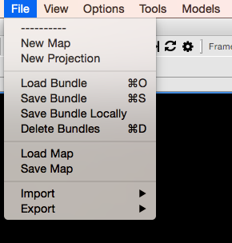
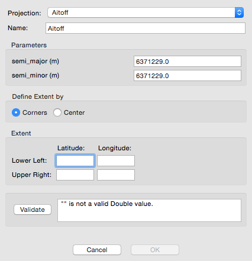
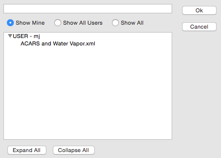
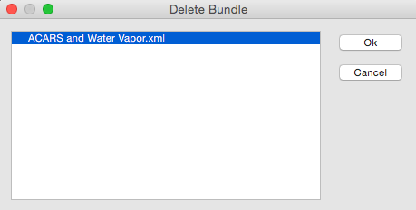
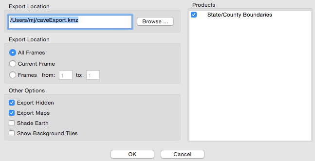

D2D User Guide : System Menus
CAVE Menu
AWIPS Statistics
captures system performance and analyzes statistics. The captured data is viewable via a graph or .csv file.

Preferences
allows the user to set the Base Maps and Server Data directories; set the Database Connection String, Config Directory, and Log Directory for the Hydro applications; set the Localization Site and/or Server for the workstation; configure the Mouse operations; change the Performance Levels; set the Radar Server; set the Font Magnification; and set the Text Workstation hostname.

File

New Map
opens a new blank map editor tab. This can also be done by right-click on any tab and selecting New Editor

New Projection
allows users to create a new map projection.

Load Bundle
provides the ability to load a previously-saved bundle from within the AWIPS II system.

Save Bundle
provides the ability to save a product display within the AWIPS II system, synching the bundle between CAVE and the EDEX server.

Delete Bundle
provides the ability to select and remove a saved bundle.

Load Bundle from Disk
provides the ability to load a previously-saved display from a path within the file directory of the workstation.
Save Bundle to Disk
provides the ability to save a product display to a path within the file directory of the workstation.
Load Map from Disk
provides the ability to load a map or product display from a path within the file directory of the workstation.
Save Map to Disk
provides the ability to save a map or product display to a path within the file directory of the workstation.
Import
allows the user to import GIS Data, BCD File, GeoTIFF, LPI File, Shapefile, SPI File, or a D2D Display. The “GIS Data” option opens the GIS application, which provides the ability to import geospatial data from varying GIS data sources. The GIS application has been incorporated into CAVE for use with FX-Net.
Export > Image
which captures a screenshot of the current view

Export > Print Screen
will bring up the workstation print dialog.
Export > KML
The displays can then be used in other applications or sent to other users for analysis. The “Export” submenu also includes a “KML” option, which allows users to save D2D displays in the KML (Keyhole Markup Language) file format (actually as a compressed KMZ), which can be used in applications such as Google Earth.

The KML dialog box includes options to select frames to export, as well as the following “Other Options”:
-
Export Hidden: When selected, all displayed and hidden products listed in the Product Legend section of the Main Display Pane will be exported.
-
Export Maps: When selected, all enabled maps displayed within the Main Display Pane will be exported.
-
Shade Earth: When selected, a shaded background is applied to the exported product. If loaded in Google Earth, the earth will be overlaid with a black backdrop, and data will be displayed as it would in D2D with a black background.
-
Show Background Tiles: When selected, data (such as plot data) will display on top of black tiles when loaded in Google Earth.
Options
Clear Data
will remove all non-system resources from the current view (this will preserve any maps that you loaded).
1 Pane / 5 Pane Layout
will switch between the single page (default) view and the 5-panel WFO view (centered on OAX by default).
Time Options (Ctrl + T)
This check button enables/disables the ability to select the time interval between frames of real-time or model data. This feature has the added benefit of allowing you to view extended amounts of data (temporally) but stay within the limits of 64 frames. For example, METAR surface plots, which typically display every hour, can be set to display every three hours via the Select Valid Time and Time Resolution Dialog Box.
When the Time Options check button is selected, the next product you choose to display in the Main Display Pane launches either the Select Valid Time and Time Resolution dialog box or the Select Offset and Tolerance dialog box.
-
When you are loading data to an empty display and the Time Options check button is enabled, the Select Valid Time and Time Resolution dialog box opens.
-
Valid Time: In this column of dates/times, you may choose the one that will be the first frame loaded onto the Large Display Pane. The Default option is the most recent data.
-
Time Resolution: This column contains various time increments in which the data can be displayed. Once you make a selection, the Valid Time Column indents the exact times that will be displayed. The Default resolution displays the most recent frames available.
-
-
With the Time Options check button enabled for a display that already contains data, when you choose the data to be overlaid in the Main Display Pane, the Select Offset and Tolerance dialog box appears, providing the following options:
-
Offset: This column contains various time increments at intervals before, at, or after the time you selected for the first product that is displayed in the Main Display Pane.
-
Tolerance: The options in this column refer to how strict the time matching is. “None” means an exact match, while “Infinite” will put the closest match in each frame, regardless of how far off it is.
-
Data Scale (Ctrl + S)
This check button enables/disables the ability to display data on its native scale. For example, if you enable Data Scaling and select a product from an alternate radar, the data will be displayed with that radar in the center of the screen. Other data can be overlaid on this “dynamic” scale until the Main Display Pane is cleared or a non-plan-view product is loaded.
Image Combination (Insert)
This check button enables/disables the ability to display two images at once. You can also enable/disable the ability to combine images by using the Toggle Image Combination iconified button on the Toolbar.
Combined-image displays have been improved by removing the valid time for non-forecast products and removing the date string (time is kept) from the left side of the legend. In particular, this makes All-Tilts radar legends more usable.
Display Properties
This menu option opens the Display Properties dialog box. All the options available in this dialog box are also available on the Toolbar.

Loop Properties (Ctrl + L)
Loop Properties is another dialog box that can be opened from the Options menu or from the Loop Properties iconified button on the D2D Toolbar, or by using the Ctrl + L keyboard shortcut. The dialog allows you to adjust the forward and backward speeds, with 0 = off and 10 = maximum speed. You can set the duration of the first and last frame dwell times to between zero and 2.5 seconds.
You can turn looping on or off by checking the Looping check button. There is also a Looping button located on the Toolbar that enables/disables the animation in the large display pane. Finally, you can turn looping on and increase/decrease forward speed by pressing Page Up/Page Down on your keyboard, and turn looping off with the Left or Right Arrow keys. On the toolbar, you can use the button to start/stop looping.
Image Properties (Ctrl + I)
The Image Properties dialog box can be opened here or by using the Image Properties iconified button on the D2D Toolbar, or using using the Ctrl + I keyboard shortcut. This dialog box provides options that allow you to change the color table; adjust the brightness, contrast, and alpha of either a single image or combined images; fade between combined images; and/or interpolate the displayed data.
Set Time
This option allows you to set the CAVE clock, located on the bottom of the screen, to an earlier time for reviewing archived data.
Set Background Color
You can now set the background display color on your workstation. You can also set the background display color for a single pane via mouse Button 3 (B3).